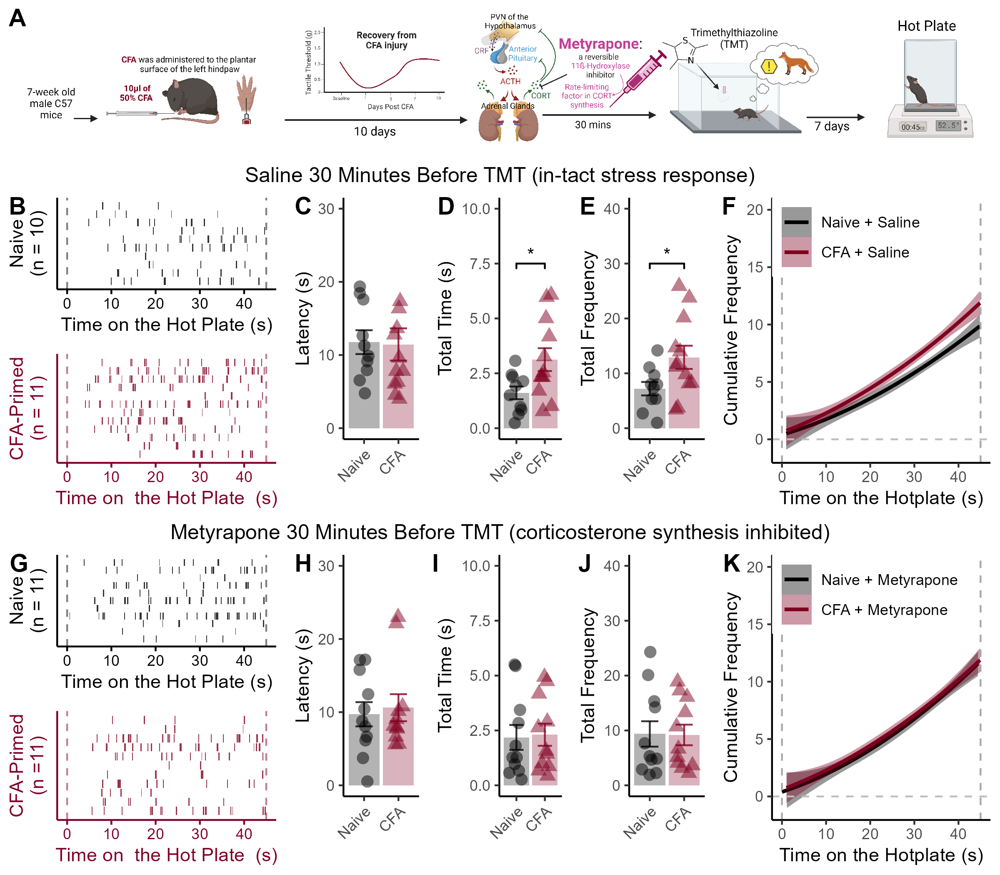

Figure 5

Figure 5. Enhanced corticosterone production during TMT facilitates nociceptive responses on the hotplate among CFA-primed mice. (A) Timeline of experimental procedures. Mice were administered CFA and allowed 10 days to recover. Thirty minutes before a single exposure to TMT, mice were injected (i.p.) with 50 mg / kg metyrapone or Saline control. One week after the single exposure to TMT nociceptive responses during a 45-second exposure to a 52.5-degree hotplate were measured. (B) Raster plots of nociceptive responses during the hotplate test for saline-treated mice. (C) Latency to exhibit the first nociceptive response during testing. (D) CFA-primed mice spent more time exhibiting nociceptive responses, and (E) exhibited a higher frequency of nociceptive responses. (F) The cumulative frequency of nociceptive responses across the session. (G) Raster plots of nociceptive responses across the hotplate test for metyrapone-injected mice. (H) Latency to exhibit the first nociceptive response during the hotplate test. (I) Metraypone injection blocks the enhancing effect of CFA-priming on time spent exhibiting nociceptive behaviors on the hotplate, and (J) the frequency of nociceptive responses during the task. (K) Cumulative frequency of nociceptive responses for metyrapone-treated mice. Data displayed as mean value +/- SEM. * indicates p < 0.05.
Effect of CFA for Saline-Treated Mice
a <- LE_data %>%
group_by(ID,CFA) %>%
filter(Behavior == "shake/flick") %>%
filter(Drug == "Saline") %>%
summarise(
min=min(Start_clean)
)## `summarise()` has grouped output by 'ID'. You can override using the `.groups`
## argument.##
## Two Sample t-test
##
## data: min by CFA
## t = 0.11032, df = 20, p-value = 0.9133
## alternative hypothesis: true difference in means between group Naive and group CFA is not equal to 0
## 95 percent confidence interval:
## -5.606881 6.233048
## sample estimates:
## mean in group Naive mean in group CFA
## 11.76050 11.44742We also investigated whether metyrapone administration prior to TMT exposure would alter nociceptive behaviors on the hotplate in CFA-primed mice. One week after a single TMT exposure, mice were tested on a 52.5 degree hotplate for 45 seconds (Figure 5A). Although there was no group difference in latency to the first nociceptive response (p = 0.91, Figure 5B, C),
data <- LE_data %>%
filter(Behavior == "shake/flick")
## Saline-treated
saline <- data %>%
filter(Drug == "Saline")
a <- saline %>%
group_by(ID,CFA) %>%
summarize(
sum=sum(Duration)
)## `summarise()` has grouped output by 'ID'. You can override using the `.groups`
## argument.##
## Two Sample t-test
##
## data: sum by CFA
## t = -2.4052, df = 20, p-value = 0.02596
## alternative hypothesis: true difference in means between group Naive and group CFA is not equal to 0
## 95 percent confidence interval:
## -2.8316628 -0.2013039
## sample estimates:
## mean in group Naive mean in group CFA
## 1.608100 3.124583CFA-primed mice that were administered a saline vehicle 30 minutes before TMT spent more time exhibiting nociceptive responses on the hotplate (t20 = 2.4, p = 0.026, Figure 5D),
## `summarise()` has grouped output by 'ID'. You can override using the `.groups`
## argument.##
## Two Sample t-test
##
## data: n by CFA
## t = -2.2183, df = 20, p-value = 0.03828
## alternative hypothesis: true difference in means between group Naive and group CFA is not equal to 0
## 95 percent confidence interval:
## -11.0923862 -0.3409471
## sample estimates:
## mean in group Naive mean in group CFA
## 7.20000 12.91667and a higher frequency of nociceptive responses (t20 = 2.22, p = 0.038, Figure 5E, F).
No Effect of CFA for Metyrapone-Treated Mice
mety <- data %>%
filter(Drug == "Metyrapone")
a <- mety %>%
group_by(ID,CFA) %>%
summarize(
sum=sum(Duration)
)## `summarise()` has grouped output by 'ID'. You can override using the `.groups`
## argument.##
## Two Sample t-test
##
## data: sum by CFA
## t = -0.15991, df = 20, p-value = 0.8746
## alternative hypothesis: true difference in means between group Naive and group CFA is not equal to 0
## 95 percent confidence interval:
## -1.707064 1.463973
## sample estimates:
## mean in group Naive mean in group CFA
## 2.183727 2.305273## `summarise()` has grouped output by 'ID'. You can override using the `.groups`
## argument.##
## Two Sample t-test
##
## data: n by CFA
## t = 0.061034, df = 20, p-value = 0.9519
## alternative hypothesis: true difference in means between group Naive and group CFA is not equal to 0
## 95 percent confidence interval:
## -6.032246 6.395882
## sample estimates:
## mean in group Naive mean in group CFA
## 9.363636 9.181818In contrast, no group differences in hotplate behavior were observed between CFA-primed and pain-naive mice treated with metyrapone prior to TMT exposure (all p > 0.87, Figure 5G-K).